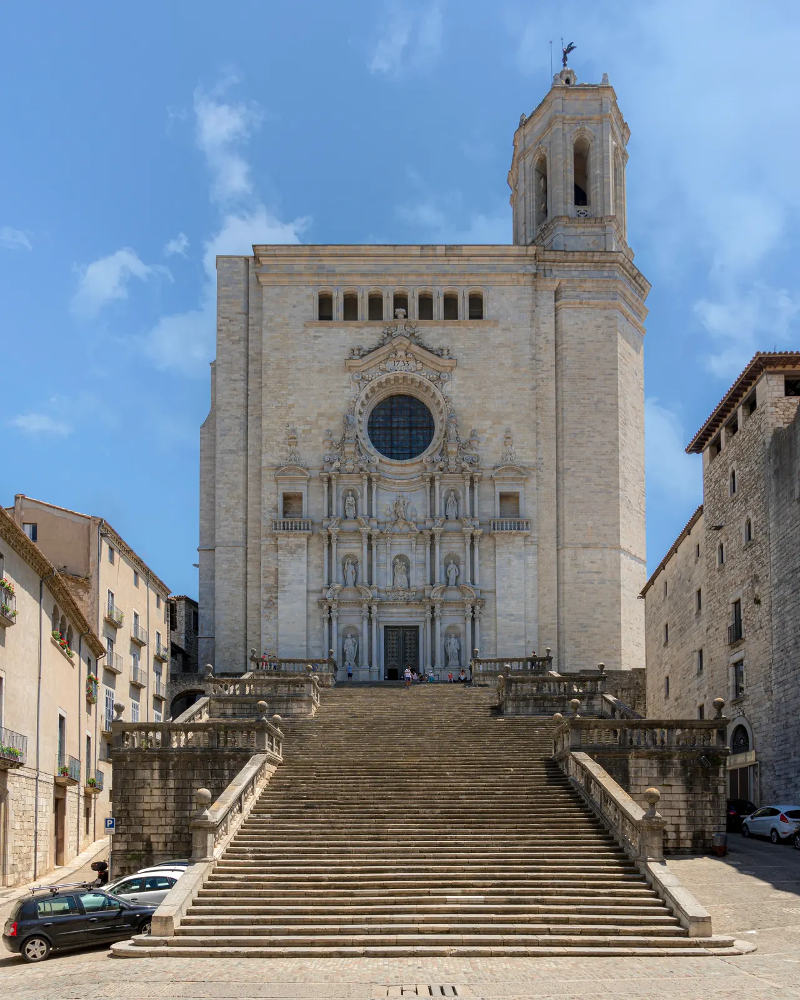

Girona Cathedral

| 지역 | Girona |
|---|---|
| 등급 | Must |
| 언제 | 일정에 배정된 날을 시간표에서 찾지 못했다 |
| 상세 | 챕터 본문에서 보기 |
| 지도 | Girona 실행지도 · 핀 이름 Girona Cathedral |
참고
오프라인입니다. 위키백과와 지도 링크는 연결되면 다시 동작합니다.
도시를 위에서 읽고 아래로 내려오는 첫 코스다.
Girona의 매력은 개별 건축물보다 언덕 위 대성당과 성벽, 아래쪽 Onyar 강 사이의 높이 차에서 나온다. 대성당 내부를 본 뒤 성벽을 걸으며 도시 전체를 내려다보고, 저녁에 강변으로 내려오면 지형이 기억에 남는다.
- 놓치지 말 것: 넓은 고딕 신랑, 대성당 계단, 성벽 탑의 전망, 구시가지 지붕
- 적정 체류: 대성당 45–60분 + 성벽 45–60분
- 피로 시 축소: 대성당 내부 또는 성벽 중 하나만 선택하고 Onyar 야경 유지
대성당의 고딕 신랑은 폭 약 23m 로 세계에서 가장 넓은 고딕 단일 신랑이다. 기둥 열 없이 한 칸으로 건너지른 공간이라, 들어서면 넓이가 먼저 몸으로 온다. 1417년 건축 회의에서 기존 3랑 계획을 버리고 단일 신랑으로 바꾼 결정의 결과다 — 도면이 아니라 논쟁의 산물이라는 뜻이다. 계단 90단은 그 결정을 극적으로 보이게 만드는 장치다.
이 자리에는 로마 신전, 무어 시대의 모스크, 로마네스크 성당이 차례로 서 있었다. 지금 건물에도 그 켜가 남아 있다 — 회랑과 종탑 하나(샤를마뉴 탑이라 불린다)는 11–12세기 로마네스크 그대로이고, 보물관의 「천지창조 태피스트리」는 11세기 직물로 유럽 로마네스크 직물 중 손꼽히는 유물이다. 고딕의 거대한 한 칸 안에 로마네스크의 회랑이 끼워져 있는 구조라, 건물 하나에서 두 시대의 공간 감각을 비교할 수 있다.
방송 촬영지로 알려진 뒤 계단 앞이 붐비는 시간대가 생겼다 — 계단의 스펙터클은 아래에서, 도시의 스펙터클은 성벽 위에서 각각 따로 보는 것이 이 장소를 제대로 쓰는 법이다. 성수기 낮에는 계단 아래 광장이 촬영 인파로 막히기도 하니, 이른 저녁 방문이 여러모로 유리하다.
| 항목 | 내용 |
|---|---|
| 통합권 | 대성당 + Sant Feliu €7.50 · 미술관 포함 €12 (2026-08-14 확인) |
| 체류 | 대성당 45–60분 + 성벽 45–60분 |
| 순서 | 대성당 → 성벽 → 해질 무렵 Onyar 강변 |
| 주의 | 성벽은 계단과 좁은 탑 통로가 있다. 성당은 어깨·무릎을 가린다 |
| 공식정보 | tickets.catedraldegirona.cat |